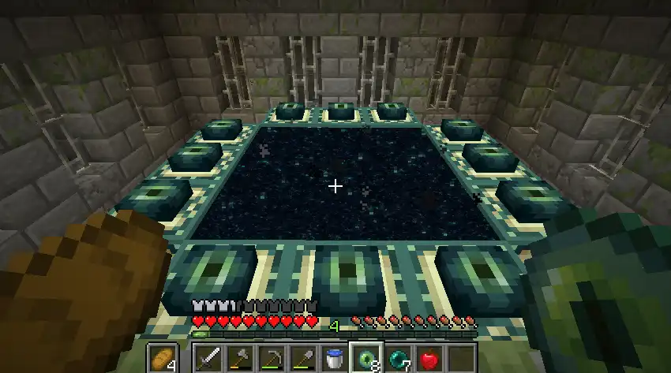

About the Game
Minecraft is an open-world sandbox game. Players gather resources, craft tools, and try to defeat the Ender Dragon. Its procedural generation and random elements make it one of the most popular and competitive speedrunning games.
Key Speedrunning Features
- Random seed vs set seed categories
- RNG-dependent resource collection
- Nether routing
- Stronghold location optimization
- Blaze rod and ender pearl RNG
- Fast crafting and inventory management
Gameplay Style (Speedrunning)
Minecraft speedrunning aims to optimize RNG while performing fast mechanics. Runners reset worlds frequently to find favorable seeds, then rush the Nether, locate a fortress, collect blaze rods, trade for ender pearls, and find the stronghold. Movement, crafting speed, and routing knowledge are essential.
Difficulty
Moderate to very high. RNG plays a major role, and runners often reset hundreds of worlds before finding a viable seed. Mechanical skill and consistency are critical.
Gallery
